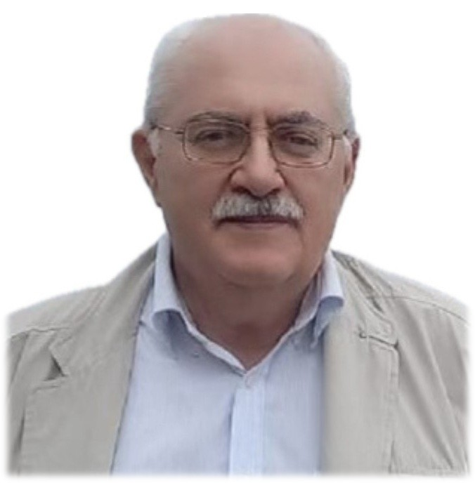
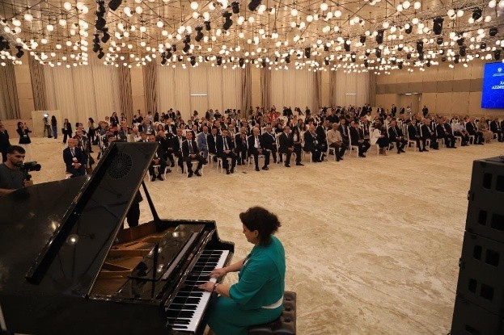

Literary reflections capturing the spirit and memories of the Forum

✨NUR (LIGHT)
Every meeting, no matter how beautiful and long, or fleeting, it may be, by its very nature implies that one day farewell will come. Glory be to the Almighty: a farewell need not be forever; it may be postponed, as it was in our case, since early the next morning we, the participants of the First Forum of Azerbaijani Scientists Living Abroad, were all going to set off together for Karabakh. Yet our scholarly fellowship, gathered in the hospitable hall of the Gulustan Palace, was drawing to a close with a farewell dinner and concert.
Of course, we had gathered around large round tables not merely, and not even primarily, to satisfy our culinary preferences or to sample all the refinements of ancient and modern Azerbaijani cuisine. Above all, we had come together to continue that human conversation, free from the strict time limits of academic meetings and sessions, which every person living on Earth so often lacks.
As time passes, when we remember someone who has departed from us into the world from which there is no return, we belatedly regret that perhaps — who knows, except Allah? — perhaps the one who left needed only one more kind glance or one kind word in order to remain with us a little longer.
And our farewell evening meal most likely served precisely this unifying purpose: to bring together a community of people whose destinies share something great in common — the history and language of their ancestors, the pull of the land where many of them were born and raised, and, of course, a grateful love for everything embraced by the simple yet capacious word: Motherland.
On the low platform of the stage, before those gathered for the farewell dinner, musicians appeared with national Azerbaijani instruments — the tar, kamancha, gaval, and wind instruments. In front of everyone, seated apart, was a beautiful woman. This was the renowned Ravana Gurbanova, soloist of the Azerbaijan State Philharmonic and the International Mugham Center. She was accompanied on the tar by Rovshan Gurbanov, artistic director of the instrumental ensemble Buta — Ravana's husband and a musical virtuoso of the highest order.
The soloist began her performance with mugham. In my perception, mugham is the ancient voice of our people, piercing the expanses of human existence with golden threads of feeling, revealing to humanity the true grandeur of the Universe and bringing deep sacred meaning into the very existence of a person within it. The natural murmur present in any large hall, where many very different people have gathered, suddenly dissolved for a moment into silence. The enormous space was instantly filled with music like an ever-flowing mountain spring and with the moving voice of the khanende Ravana. In our country, khanende is the name given to professional performers of mugham.
Then came beautiful dance numbers, and other, more familiar, contemporary songs. But the first impression left by the mugham did not fade until the very end of the evening. There were many words of gratitude from guests and participants in the events of the First Forum of Azerbaijani Scientists Living Abroad. The evening, probably just as the organizers had planned, was approaching a happy and peaceful conclusion when, as it became clear that only a few moments remained before the celebration would end, in a single heartfelt impulse almost all the Azerbaijani scientists rose, went to the center of the hall, joined hands, formed a huge living circle, and began to dance the ancient Azerbaijani dance Yalli — the very dance carved into the rocks of Gobustan, through which the Twelfth Roman Legion once wished, but never managed, to pass, eventually becoming kin with and blending into the local population, leaving only a few reminders of itself in the name of the Absheron settlement of Ramana, meaning “Roman,” and in the ancient coat of arms of Baku, the head of a bull — the bull being the totemic symbol of the Twelfth Legion, founded by Julius Caesar and called the Thunderbolt Legion.
And we did not let the musicians leave. They played as long as our dance continued. Incidentally, the famous scholar Thor Heyerdahl, who visited Azerbaijan many times, proved that it was precisely this dance that is depicted in the petroglyphs of Gobustan. Though I am sure that among us, people had guessed this even before him. And one last thing, which surely not only I noticed: how bright, inspired, and kind the faces of all the Forum participants were.
I think I understand where that inner light comes from. Perhaps you have already guessed it too?
❤️FEELINGS FOR THE HOMELAND
We were traveling to Khankendi and Shusha through Barda and Aghdam — or rather, through the place where the city of Aghdam once stood, a city wiped from the face of the earth by those who for centuries have cried out about genocide, while in their own homes there is not a single broken pane of glass and not one crack in the walls.
The settlements of the population that voluntarily fled their homes still, even a year after their flight, look well-kept and untouched by anyone. My fellow traveler was named Akif Kadyrovich Alafardov. His eyes shone with joy, a kind smile lit his face, and he held an Azerbaijani flag in his hand, waving it quite actively in time with the song being sung by the entire bus. The participants of the First Forum of Azerbaijani Scientists Living Abroad, which had opened two days earlier, were in the finest spirits despite the many-hour journey from the capital of Azerbaijan to Khankendi and to Shusha, the cultural capital of our Motherland.
A few warm words about my fellow traveler. Akif muallim was born and raised in Kyrgyzstan in a family of Azerbaijanis forcibly resettled by the Soviet authorities thousands of kilometers away from their native Azerbaijan. But our compatriots, the forced migrants, did not become embittered. They lived an honest working life, raised and educated their children in respect for elders and in love not only for their own people, but also for those who helped them settle in a new place, sharing bread and shelter.
Years passed. Today, Akif Kadyrovich Alafardov is a trauma surgeon known far beyond the borders of the country, a doctor who has cured thousands of patients and trained a great number of qualified specialists. He is an Honored Doctor of the Kyrgyz Republic, a Candidate of Medical Sciences, and the author of a monograph, methodological recommendations, and numerous scientific articles. In addition to his achievements in his profession, Alafardov carries out extensive public work as the current president of the Kyrgyzstan-Azerbaijan Society of Friendship and Cooperation and the honorary president of the public association of Azerbaijanis living in the Kyrgyz Republic, Azeri.
At one moment during our journey, it suddenly seemed to me that despite Akif muallim's venerable age, his broad, open smile, illuminating our entire road toward Karabakh — so dear to every Azerbaijani heart — was touchingly childlike, as though its owner were not in his eighth decade at all, but in his very first. Girls dancing in the aisle of the bus, the song hummed by our leader, Professor Masud muallim, who had flown to Baku from the center of Europe, the flags in the hands of many of our fellow passengers — all this together created the unique emotional and spiritual atmosphere of our trip.
And Akif muallim and I, together with everyone else, joyfully joined in the melodies of the songs of our youth. Our hearts were set on Khankendi and Shusha. Yes, we live and work in different countries of the world. But we are together. And we love our Motherland, our land — not only today or yesterday. We love it always. We are united in this love.
🏇JIDIR PLAIN
The road from Khankendi, winding and twisting among rocks covered with lush shrubs, led our buses higher and higher into the mountains, bringing closer with every turn the moment of meeting Shusha. Soon the roofs of Khankendi buildings were far below us, while our excursion buses continued their slow but unceasing ascent.
The participants of the Forum of Azerbaijani Scientists Living Abroad — some impatient, some openly moved, some curious — looked out of the bus windows together, following the road. And yet, for most of us, Shusha appeared suddenly. Almost immediately the buses stopped, and we poured out in a friendly crowd near the hotel where lunch awaited us. And not only lunch.
There, in the hotel, we were also to have a most interesting meeting with the rector of Karabakh University, Shahin Bayramov, and the staff of the institution he leads. The rector told us about the university's prospects and the future-oriented aspirations of Karabakh's youth, about hopes and projects, and about calm confidence in achieving results.
Without doubt, the support of leading Azerbaijani scholars working abroad will yet have a beneficial influence on the knowledge and skills of the students of Karabakh University. None of us had the slightest doubt about this.
After thanking the esteemed rector for the engaging dialogue, we finally set off toward the city.
“Musicians and poets are closest to God,” the great Siberian writer and front-line soldier Viktor Petrovich Astafyev often repeated. I knew him for many years and spoke with him more than once; he was the man who wrote not only The Tsar Fish and Vasyutkino Lake, but also the novel about the horrors of war, Cursed and Killed.
And now I was standing near three unique restored monuments — to the composer Uzeyir Hajibeyli, the poetess Natavan, and the singer Bulbul — people who, until the end of their days, sang of love for all living things. Here, on their native land, in the city where they were once born and raised, their monuments — these very monuments now restored — had been savagely shot at, mutilated, and taken away for scrap metal. Why? I know only one thing: people who maim monuments to musicians and poets deprive themselves of the right to be called kind people.
I saw the ruins of the houses of Natavan and Hajibeyli. No bomb had struck them. Thieves turned them into ruins — I will not name their nationality, for those who shoot at monuments to musicians and poets and steal old window frames, pots, and chamber pots have no nationality and cannot have one.
After rinsing my face in the spring, I headed toward the fortress gates of Shusha. Most of my colleagues had already passed through them and were taking joyful photographs on the other side of the old fortress wall, while I, with my tired diabetic legs, had fallen far behind. Besides, the ground near the gates was so uneven and rocky that my walking speed dropped almost to zero. It was very difficult to move my legs and at the same time keep my balance on the rocky, extremely uneven ground.
Suddenly, someone's gentle yet confident hand took me by the elbow and began to support me. I did not know this young woman's name or who she was, but she saved me then from very likely trouble — for instance, from an accidental fall on stones polished by time and by hundreds of thousands of feet.
Her help was entirely selfless, prompted by sincere sympathy for me. We spoke in our native Azerbaijani language, and I allowed myself to tell Ms. Gulkhanim — that was the name she gave — about certain events in my life that made the trip to Shusha not merely an excursion by an outsider, but, in a certain sense, symbolic and long-awaited.
In November 2020, when our army was storming Shusha, I was in Siberia and fell into the hands of a policeman. I had with me a pension travel card with my first name, surname, photograph, and place of birth, but I did not have my passport.
The sergeant grabbed hold of me and dragged me to the police station. I learned later from the report that his surname was Dzhonoyan. I have diabetes; my legs were inflamed at the time, and at that moment I could not only not stand for long, I could not even remain for long in tight shoes. But neither Dzhonoyan nor his colleagues would let me go. They were supposedly checking my identity in the database — checking for many hours, hinting that I should call myself Russian, literally insisting on it, saying that then they would release me immediately. And I stubbornly continued to repeat that I am Azerbaijani. You understand, for nothing in the world can I renounce my father and mother; one must not renounce them. I am a Turk, and I will remain one even if they cripple me.
And now I, who a year earlier had written the poetic dastan Kharibulbul about the history of our Motherland, was in Shusha for the first time in my life.
In the southern part of Shusha there is a flat tract known as Jidir Duzu — in Azerbaijani, Cıdır düzü; the approximate meaning is “field for races.” During the time of the Karabakh Khanate, horse races on the famous Karabakh breed were traditionally held here twice a year for several centuries. Here too the people traditionally celebrated Novruz, the spring holiday, and other festivities; the game of chovgan was also played — an ancient Eastern equestrian team sport and the forerunner of modern polo. In the nineteenth and twentieth centuries, the spacious mountain plateau became a favorite place for plein-air painting, where artists created pictures not in the studio but in nature, which served as the basis for perceiving the subject in its natural light. The mountain views opening from Jidir Duzu are truly magnificent.
Literary and musical gatherings, festivals, fairs, and official celebrations also took place here. From May 1989 to 1991, the Kharibulbul music festival was held here; it was revived in 2021 after the liberation of Shusha.
While Ms. Gulkhanim was escorting me by the arm to the bus, I told her about my long-standing, secret, and funny dream — one I had had since November 2020 and had never shared with anyone: to climb to the mountain plateau of Jidir Duzu and walk barefoot on its grass. Perhaps then my legs would stop hurting as they had hurt throughout the past four years. Of course, it is naive to think so — but where have you ever seen a poet who does not believe in miracles?
Ms. Gulkhanim brought me to the excursion bus parking area and wished for my dream to come true. Soon the bus set off.
But my difficulties did not end there. The bus did not reach Jidir Duzu. The driver said the mountain slope was too steep for our type of transport to climb, and from there one had to continue on foot. Or not go at all. But what does it mean not to go when it is a matter of fulfilling a dream? I went.
The ascent was indeed steep for me at that moment. Again I fell behind everyone and could barely drag myself along. To take even one or two more steps upward, I constantly had to stop or lean against the low stone wall of the narrow sidewalk.
I had long since stopped watching the other excursionists and tried to look only under my feet. Sweat poured into my eyes. There was not enough air in my chest. Suddenly, along my path, a small level area appeared, turning left away from the ascent that had begun to seem endless. I turned left into a relatively even alley. In the distance stood an architectural structure bearing the inscription VAQIF. I guessed that this was the alley leading to the recently restored mausoleum of the poet Vagif. Molla Panah Vagif was the first vizier of the Karabakh Khanate, a well-known political and public figure of eighteenth-century Azerbaijan, and, most importantly, one of Azerbaijan's most outstanding poets and one of the most beloved by the people.
The alley gave me a small respite, but I had to continue along the previous path toward the Jidir Duzu plateau; otherwise, I might not reach the top before everyone returned to the buses. This thought urged me on, and I moved upward again.
Perhaps those were the hardest meters for me in recent years. Once, I had climbed rocks with ease, crossed taiga windfalls, and struggled out of tundra bogs. A stroke and three bypasses in the heart — alas, I can no longer repeat my former expedition feats. And yet my efforts and attempts were not in vain; they were generously rewarded.
As soon as the Jidir Duzu plateau opened before my eyes, I saw ahead of me Gulkhanim, my earlier rescuer. Then we walked together again, arm in arm. It turned out that she had come there with the driver of a Land Rover, an unfamiliar man whom she had persuaded to help me get to the plateau. But it seemed they had passed much earlier on the way, while I, at my tortoise pace, had not yet reached anywhere.
We stepped onto the grass. I took off my shoes, took off my socks, and walked on it barefoot — I walked barefoot across Jidir Duzu without the third toe on my right foot, which had been amputated in 2020. For the first time, I walked on land I had never seen before, but for whose freedom, even if involuntarily, even if only with a little blood, I had paid with my own.
I walk across Jidir Duzu and smile, happy and regretting nothing. I remember the words that sounded then to the whole world: “Shusha, you are free!” They still resound in my soul.
Gulkhanim left me for a short while to film, for my memory, the beautiful, spacious views opening before those who had climbed to Jidir Duzu. Perhaps we will never see Gulkhanim again, but for me from now on Shusha is she, and Azerbaijan is my brother scholars — Masud efendi, Bakhtiyar bey, Emil muallim, Akif muallim, and many, many others. My people. Native. Kind. A people who know how to build, forgive, and love.
🎹KHADIJA

In the enormous hall, where separate words and sounds, crossing one another, easily merge into a common resonant echo, forming a kind of vibrating nerve of a giant enclosed space, a silent grand piano stood not far from the stage, modestly yet with dignity awaiting its hour of glory, smiling with the open, graceful wing of its lid.
One session of the World Forum of Azerbaijani Scientists Living Abroad had just ended, while the next was delayed and still had not begun.
Suddenly, from the crowd of Forum participants strolling through the hall and speaking with one another, a slender dark-haired woman in a dress the color of ripe chrysoprase stepped away. She confidently approached the elegant grand piano, sat down on the short soft bench before the instrument, and immediately touched its keys as though kissing them with the tips of her slender, graceful fingers. And music arose.
Many hearts in the hall stood still at that very familiar melody, known from early childhood and therefore all the more beloved and dear: “Ay Lachin.”
Lachin is a city in Azerbaijan, looted and burned by the occupiers in 1992, liberated, restored, and rebuilt anew after August 2022 — after thirty long years.
The woman, continuing her performance at the piano, was soon surrounded on all sides by photojournalists and camera operators. They filmed her from every angle, while she continued to play as though no one were nearby — only she and the piano.
Her name is Khadija Zeynalova. She is a world-renowned composer. She lives and works in Germany. She came to take part in the Forum by personal invitation, as our national pride, as a treasure of the Azerbaijani people.